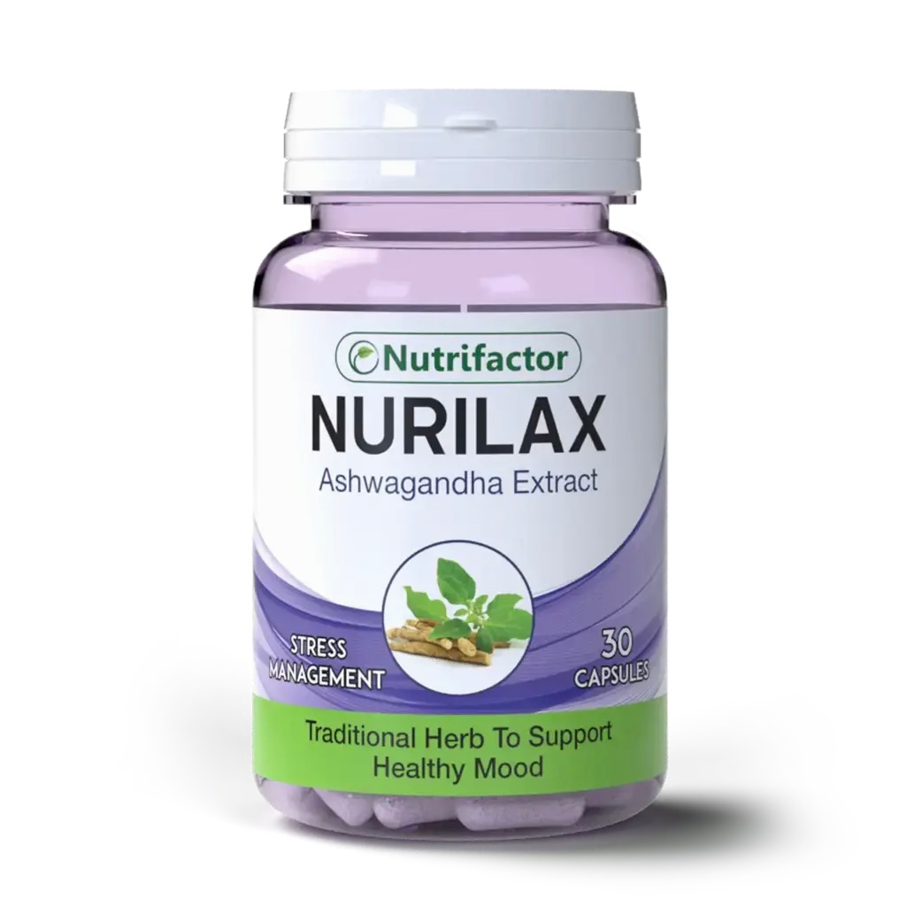
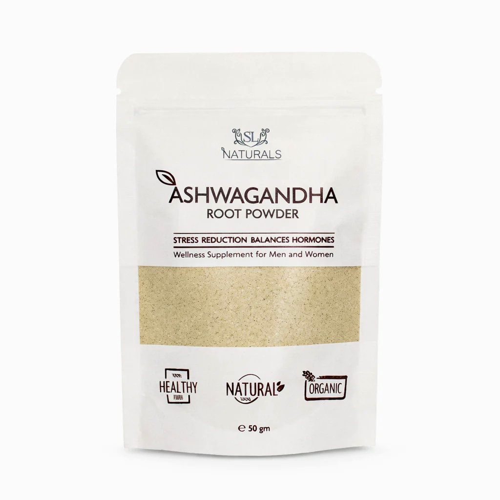

Formulations
Dosage Forms

Capsules / Tablets
250–600 mg extract
Once or twice daily
With food or milk
Standardized to 5% withanolides. Most bioavailable form for stress and anxiety management.
Manual 360° Viewer

Rotate only with drag or slider — no scroll spin
1 / 9

Churna (Powder)
3–6 g per day
With warm milk/honey
Traditional preparation
Raw root powder — traditional Ayurvedic preparation. Higher dose required vs extract; bioavailability enhanced by ghee/fat.
Other Dosage Forms
Liquid Extract2–4 mL tincture
Herbal TeaRoot decoction
AshwagandharishtaFermented syrup
Medicated OilTopical application